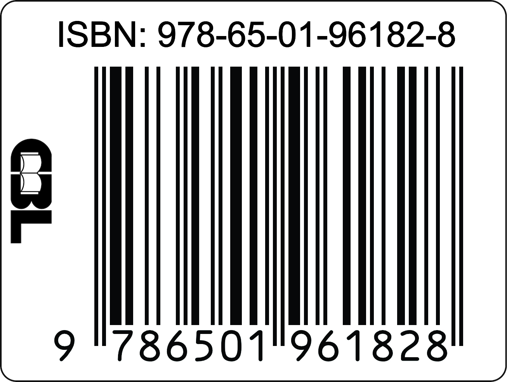
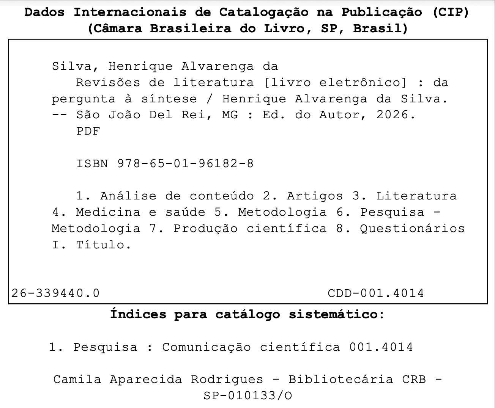

Sobre este projeto
Informações sobre o autor, tecnologias e licenciamento
![]()
Autor
Henrique Alvarenga da Silva
Médico psiquiatra. Professor de Psiquiatria e Psicopatologia no curso de Medicina da Universidade Federal de São João del-Rei (UFSJ).
Professor de Métodos de Pesquisa em Medicina na AFYA.
📧 mailto:henriquealvarenga@ufsj.edu.br
🆔 ORCID: 0000-0001-9799-5240
Sobre a obra
Este material foi desenvolvido como recurso educacional para estudantes de medicina, residentes e pós-graduandos da área da saúde que desejam compreender os diferentes tipos de revisão de literatura e aplicá-los em suas pesquisas.
Tecnologias utilizadas
Este material foi produzido utilizando ferramentas de código aberto e ciência aberta:
| Tecnologia | Finalidade |
|---|---|
| Quarto | Sistema de publicação científica e técnica |
| Markdown | Linguagem de marcação para escrita do conteúdo |
| Positron | Ambiente de desenvolvimento integrado (IDE) |
| Git | Controle de versão |
| GitHub | Hospedagem do repositório e controle de versão |
| GitHub Pages | Publicação e hospedagem do site |
| BibTeX | Gerenciamento de referências bibliográficas |
Inteligência artificial
O desenvolvimento deste material contou com o auxílio de ferramentas de inteligência artificial generativa:
- Claude (Anthropic) — assistência na estruturação do conteúdo, revisão textual e organização das referências
- ChatGPT (OpenAI) — apoio na elaboração de seções específicas e revisão de conteúdo
O uso dessas ferramentas seguiu princípios de transparência e verificação: todo o conteúdo gerado foi revisado, verificado e validado pelo autor. As referências bibliográficas foram conferidas individualmente para garantir precisão e veracidade.
A inteligência artificial foi utilizada como ferramenta de apoio, não como substituto do trabalho intelectual. A responsabilidade pelo conteúdo final, incluindo a precisão das informações e a adequação das referências, é integralmente do autor.
Repositório
O código-fonte deste projeto está disponível publicamente:
🔗 Repositório: github.com/henriquealvarenga/Literature_Review
Contribuições, sugestões e correções são bem-vindas por meio de issues ou pull requests.
Licença
Este trabalho está licenciado sob uma Licença Creative Commons Atribuição-NãoComercial-CompartilhaIgual 4.0 Internacional (CC BY-NC-SA 4.0).
Você tem o direito de:
- Compartilhar — copiar e redistribuir o material em qualquer suporte ou formato
- Adaptar — remixar, transformar e criar a partir do material
Sob os seguintes termos:
- Atribuição — Você deve dar o crédito apropriado, fornecer um link para a licença e indicar se mudanças foram feitas
- NãoComercial — Você não pode usar o material para fins comerciais
- CompartilhaIgual — Se você remixar, transformar ou criar a partir do material, deve distribuir suas contribuições sob a mesma licença
Citação
Para citar este material, utilize:
Silva, H. A. (2025). Da pergunta à síntese: Revisões de literatura em saúde. Disponível em: http://www.henriquealvarenga.com/Literature_Review/
Formato BibTeX:
@book{silva2025revisoes,
author = {Silva, Henrique Alvarenga da},
title = {Da Pergunta à Síntese: Revisões de Literatura em Saúde},
year = {2025},
publisher = {Publicação independente},
url = {http://www.henriquealvarenga.com/Literature_Review/},
note = {Recurso educacional aberto}
}ISBN
ISBN: 978-65-01-96182-8 (versão digital)

Ficha catalográfica

Agradecimentos
Agradeço aos estudantes e colegas que, ao longo dos anos, motivaram a criação deste material com suas dúvidas, sugestões e entusiasmo pela pesquisa científica.
Histórico de versões
| Versão | Data | Descrição |
|---|---|---|
| 1.0.0 | Fevereiro/2025 | Versão inicial |
Contato
Dúvidas, sugestões ou correções podem ser enviadas para:
📧 henriquealvarenga@ufsj.edu.br
Ou por meio de issues no repositório do projeto no GitHub.
Última atualização: Fevereiro de 2025